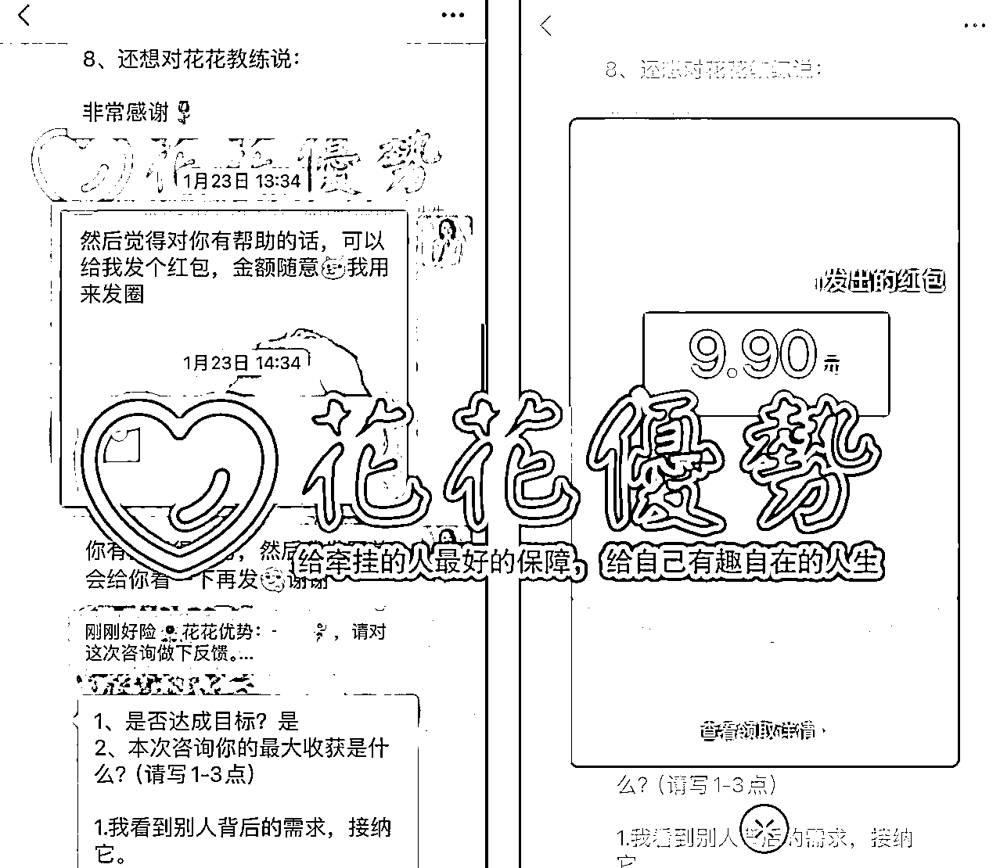
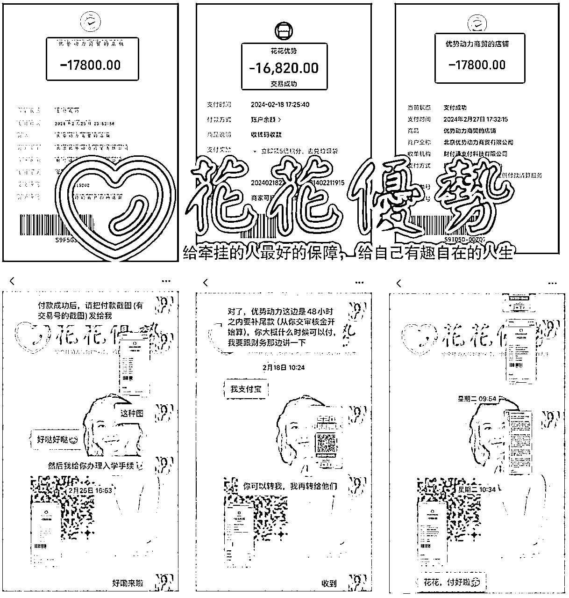
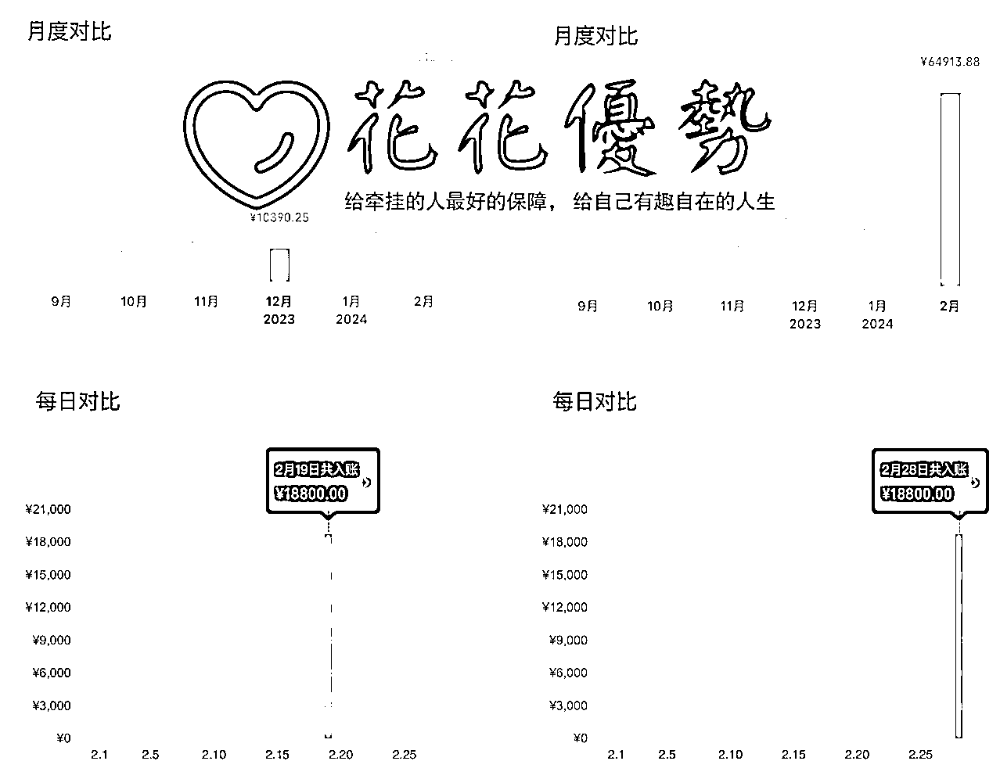
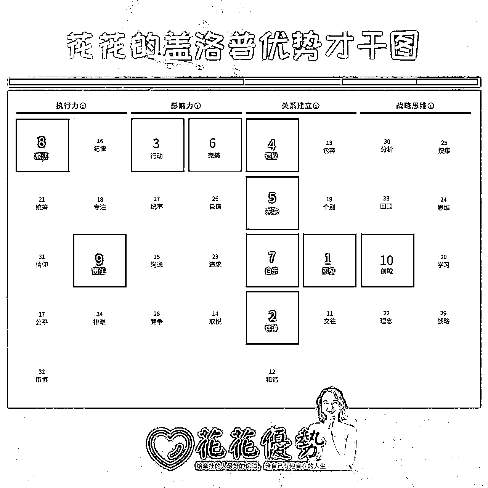
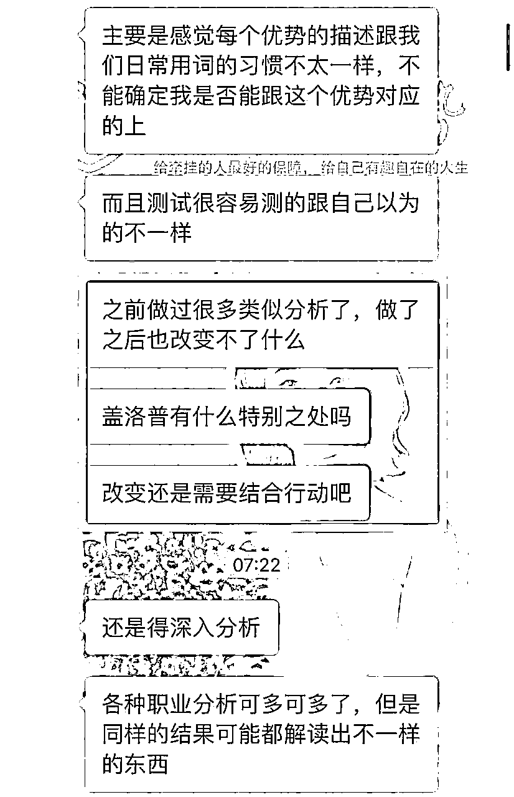
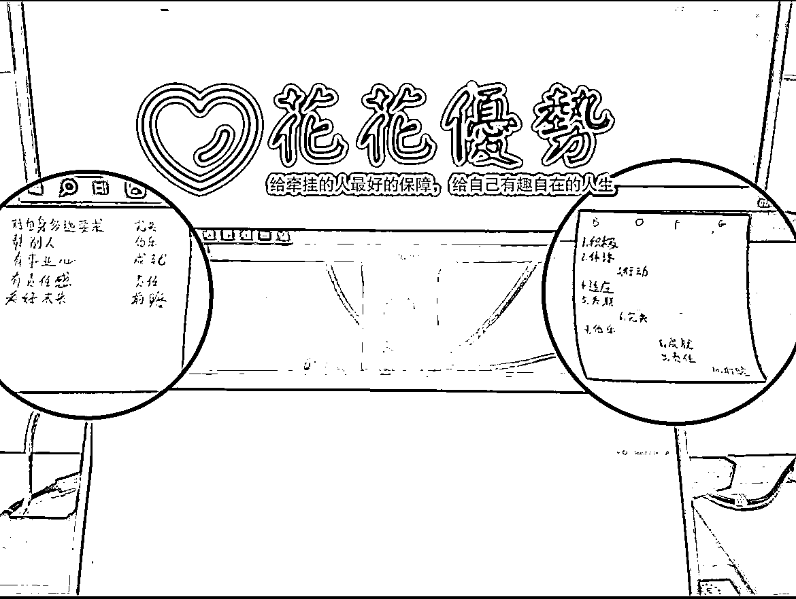
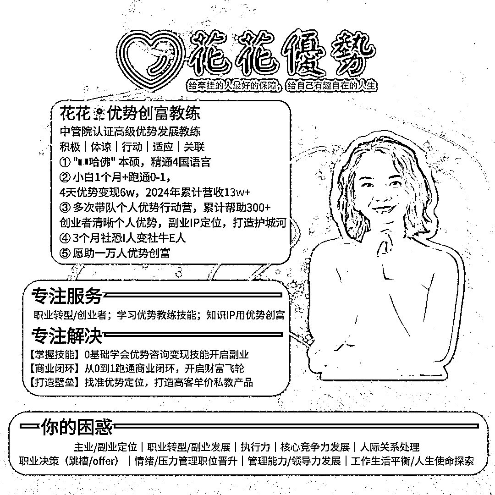

来源：https://lxfgt1wpdnk.feishu.cn/docx/RpGudeG1JoqIXFxvc7dch8vznDd
我是花花，一名盖洛普 - 优势创富教练。
今天的内容也是我的创业心法，毫无保留分享给大家，全程干货，真诚分享，希望对大家有用。
先看结果，24年1月收到的第一个咨询红包，以及24年2月收入的比较。


2023年9月21日开始接触自媒体
11月底开启优势创富教练之路
期间经历3次定位变动
12月中正式踏上自媒体轻创业之路
10天营收5W➕

当然，这个成绩没法跟很多大佬相比，甚至有时候会因为群里各位前辈老师的报喜而感到焦虑（很多老师一个月就有6-7位数的收入，说完全不焦虑是骗人的）。
但总的来说，我对当前的结果还是比较满意的，因为我之前完全是自媒体小白，连知识星球都不知道是什么。以前从来没想过要做副业，甚至在今年2月前，副业收入都没有超过5千元。
当时加入各种自媒体社群的时候还被现实生活中的“朋友”们吐槽我被PUA了，有一声不吭删我微信的，有删之前给我留言说“我知道劝你没用，但还是希望你能回头是岸”的，爸妈半夜三更给我打电话问我到底投了多少米做自媒体，是不是遇到杀猪盘了，我是不是在搞传销骗人什么的。
但我内心其实一直没有因为这些外界的声音而产生一丝怀疑，停止脚步。
我了解自己，我当下不适合辞职创业，有那个心没那个胆。真辞职了就肯定会异常焦虑，所有的动作也会随之变形。
但我知道我一定要开启创业，只靠打工永远没有出头之日。
就这样我开启了轻创业之路。
我是从南方山里出来的姑娘，从小就喜欢跟大自然接触，去山上寻宝：跟哥哥姐姐们一起摘野果子呀，拔野菜给兔子啊，挖笋什么的。
尽管我从小到大都在父母身边长大，但我们一直住在父母上班的工厂宿舍里。这个环境里，我缺乏足够的私人空间，也无法邀请朋友到家里做客，因为在这里，没有传统意义上的“家”的存在。
这种情况让我特别羡慕那些周末可以邀请同学到家里玩耍的小朋友们，而我也渴望被同学们邀请到他们家里玩。或许正是这样的成长环境，塑造我成为了一个大蓝人。
我的父母都很普通，他们都出身于农民家庭，只有中小学程度的文化水平。由于他们一直忙于工作谋生计，没有太多时间照顾我，所以我从小就非常独立，有自己的想法，学业上的所有决定也都是我自己做的。从三年级开始，我就自己上学，自己准备早餐，自己读书，尽可能不让父母操心。
尽管我一直羡慕其他小朋友有父母来接送他们上学、参加家长会的情景，但我从未抱怨过父母没有给予我这样的陪伴。因为在我眼中，周围努力谋生的人们让我早早明白了生活的不易，人跟人之间是不一样的，特别是对于那些没有文化背景、家庭条件不好的人来说。
这也解释了为什么我的【体谅和积极】才干较为突出。
我曾有很长一段时间和父母同房住。他们经常工作到很晚，我有时候也会在迷糊中听到他们的私密谈话。他们会讨论还欠谁钱，今天工作累到无法举起胳膊等等。
父母总是告诉我要好好读书，不要像他们一样辛苦工作还赚不到几个钱。这让我形成了自己独特的金钱观念：我注重物有所值，不会把资源花在对我来说不必要或不能带来真正快乐的事物上（无论是金钱还是时间上），我会说“不”。
我也会按照自己的价值观来决定购买物品的金额。比如我要买奢侈品也只会选我能用很久，很难过时的那些款式，而不是随波逐流或跟随他人的价值观。这也构成了我【责任和完美】才干的一部分。
由于从小物质和精神上的匮乏，我一直缺乏自信。因此，我从小就暗下决心要远离那些沉重的工作和生活环境。如果有能力的话，我也想给家人创造更好的生活环境。
我相信知识改变命运，为了将来能过上自己想要的生活，我变得像个书呆子一样努力学习。后来，我如愿以偿地考上了大学，离开了我从小生活的小镇，来到了大城市上学和工作。
此时我并不知道原来是【成就+前瞻+适应+完美】才干在影响我，只是偶尔回想起来，觉得自己好像一直挺讨陌生人喜欢的。当别人第一次见到我的时候，他们总觉得我开朗、真诚，学习刻苦，一定是个社交达人或学霸。
可是“死读书”的我越长大越发现自己没有优势，哪怕是名校毕业，也觉得自己毫无特殊之处，找不到自己的核心竞争力（优势）。
直到接触到盖洛普后，我才真正深入的了解自己，接纳自己，投入精力和时间去把自己的才干打磨成真正的优势，也学会了怎么更好的利用我的前6-10才干来综合我的前1-5才干的过度发挥。
我买了不少合伙人级别的产品，各位老师就特别专业的在我的专属小群里开始给我做定位。给了我一个非常详细的定位表格，我到现在还记得当时填写的可费劲儿了，因为很多问题我真的不知道怎么去回答。
特别是【你可以提供的哪些资源？】这一栏，我当时真的觉得自己没什么好提供的，但有非得写点什么。
我当时的回答是：【我能够提供的：强项：共情，沟通能力，文件整合整理。精通4国语言，双母语。】
从一开始决定做留学IP（后来发现后端不稳，也就不了了之了）；
再到做小红书自媒体IP运营（后来发现非常耗时，主业之余根本没太多精力去做账号）；
再到做儿童英语启蒙（后来发现虽然自己英文流利，背景合适，但是在整体的内容输出方面经常遇到卡点。说白了就是，连朋友圈都不知道写啥，一点灵感和动力都没有）。
就这样，短短的2个月内，我就换了3次定位，也确实是没谁了。
虽然群里各位大佬经验丰富，他们可以告诉我离钱最近的定位，最正确的玩法，但是他们无法了解到我的内心是怎么想的。因为连我自己都不知道。
我当时并不知道为什么自己明知道坚持的重要性，但还是坚持不下去。在做决定要开始行动的时候总是很快速果断，但开始后总感觉哪里怪怪的，不适合自己，坚持不下去，总觉得提不起劲儿。
好在11月中旬的时候，我看到我现在的优势导师苏姐的盖洛普公开课，我就立马申请加入学习群了。
就这样，我的命运齿轮开始转动了。
其实我很早就听说过盖洛普，而且我一开始还是挺抵触盖洛普的，觉得又是像MBTI那种测试，测了也没啥用。而且我当时也认为自我的认知也挺清晰的了，不需要再做类似的测评了。
参加优势公开课的短短2周时间，我就被导师的专业魅力深深的吸引住了。我也慢慢的发现自己是真的热爱盖洛普，它让我明白了我为什么成为了今天的我。我也希望通过盖洛普去帮助更多的人变得更通透，更自洽。
这是我的盖洛普才干图：

后来，从盖洛普才干的角度我又再次分析了自己2个月换了3次定位的经历，我才知道原来那是因为【行动】才干推动我开始，但【成就】才干没发挥，所以总是虎头蛇尾，不了了之。
但当时我也不知道自己到底适合做什么，擅长什么？再加上【适应】才干的发挥，就理所当然的躺平了，甚至开始躲避群里的报喜信息，因为下意识总会因为他人的成绩而焦虑。
优势公开课结束前1周我就二话不说，我立马给我导师付了1000元的入学审核金，申请加入优势合伙人。
我这难道又是一时冲动吗？不是。
我真的希望成为盖洛普-优势创富教练吗？是的，因为2个原因：
虽然11月底就决定了要做盖洛普教练，但是拖延症犯了，直到12月中下旬才开始系统学习课程【适应才干的负面影响】。
意识到问题的严重性，我立刻报名了优势“新手村”，交了100定金，不完成所有主课作业就不退定。
我给自己制定了高强度的2-3周学习计划和时间管理，包括参加聚会、家务、搬家事项，我都会提前安排好时间。
虽然我不会制定非常细致的时间表，但是我会设定每天都必须完成的最低KPI。【适应才干靠前，讨厌做非常详细的计划，会感到压力巨大】
这两周内，我把我所有的空闲时间都投入到学习当中，包括碎片时间：例如上下班的通勤时间（平均每天2.5小时），午休时间（45分钟），睡前时间（3个小时），周末的所有时间都用在了学习优势，锻炼自己的觉察能力上。
这期间我沉下心来，不去看任何社群消息，每天坚持发至少3条朋友圈，哪怕发的时间点没人看，我也照样发。
那段时间仿佛回到了大学时期，时间安排的满满的，虽然身体累，但精神很充实，不焦虑，每完成一个KPI我就很有成就感【成就才干被满足】。
越学习盖洛普，越被每个【人】的不同才干魅力所折服。
完成了初始的学习计划后，我便开始在合伙人群里招募3位志愿者当作我的来访者，实践并锻炼我的咨询能力。
之后开始在社群里招募公益咨询的来访者，就这样，1月23号我迎来了我的第一位优势咨询来访者，并收了第一个咨询红包，9.9元。
短短1个多月的正式营业时间，我便在2月实现了5w+的营收。
开始做优势咨询的时候完全没想过自己能这么快拿到结果，开始前给自己做的心理暗示是半年内实现月入1w，没想到这么快就达成了，现在看来还是低估了自己。
很多人会有错误的僵化思维，觉得盖洛普这类优势测评没用，内心OS“做了之后也改变不了什么。认识自己了然后呢？我还是比较关心解决方案”，“不想被这类测评定义”之类的想法。

【优势 = 才干 x 投入】，大家请把这个致富密码深深的刻在脑子里。
才干是中性词，你的前十才干就是你的潜力所在。你发挥的好就是优势，发挥的不好就是劣势。
如果你没有足够的【投入】，刻意学习/练习相关的知识技能，投入时间精力，实践不到位，那么你的十把宝剑等同废铁。
盖洛普确实只是一个工具。但它可以让你找到自己的根本问题所在，因为它的颗粒度非常细。
正因为【优势 = 才干 x 投入】，所以并不是说你做了报告，了解完之后就完了。
很多人就有这个误区。难道你算一次命，做个测评，然后啥也不做，就能逆天改命了？
任何测评工具都是在帮助我们更了解自己，但是了解问题不等于问题会自己解决了。
你要做的是：通过盖洛普测评，深入的刨析和了解自己，然后接纳自己和他人，学会从情绪里抽离出来，根据事情的本质去管理自己的行为，管理致命的弱点，找到自己的优势潜力所在，投入足够的时间和精力去改变自己，慢慢的打造属于自己的独特优势和核心竞争力。
【你对自己了解的越清晰，你的行动就越笃定】
如果你没有投入的意识和决心，对于搞钱没有野心，那后面的内容也没有必要看了，不适合你。大方承认自己有赚钱的欲望，有想改变自己命运的决心，并为之投入时间和精力，这才是靠谱人做的靠谱事。
之前有个圈友分享过这么一段话：“其实从0到1需要的并不是你的能力强度，而是你的心态强度。你误以为自己不可能，事实是你从来没有向可能出发。你不是不可以，而是你从不愿意相信自己能。”
我觉得说的很对。
如果你不做盖洛普测评，很多时候你的一些行为你根本察觉不到背后的原因。
都说“性格决定命运”。
其实性格和行为是息息相关的。如果你不去深入的了解自己行为背后的原因、你不知道自己天然的行为模式是怎么样的、你不知道自己内心真正的渴望，你又怎能知道自己最大的潜力在哪呢？更别说发挥优势，有立足之本了。
只有先认识自己，才能找到突破自己的方向，才能调整自己的动作，做出更多的可能性。
不管是哪个才干领域突出的人【影响力、执行力、战略思维还是关系建立】，他们都有一个共同的点，就是通过投入把自己突出才干的正向表现发挥到极致，又通过后天修炼克制了这些才干的负面影响（阴影面）。
就如靠谱所说：“有条件作恶但从不作恶，有条件放纵也极少放纵，斯人若彩虹，遇上方知有。”
“一个人的幡然醒悟，1%靠别人的劝说，99%靠千刀万剐。”
盖洛普测评码你可以找任何盖洛普教练购买，找我购买优惠价410元。
越早开始做盖洛普测评，越早正视和接纳自己/他人，越早投入去打造核心竞争力，越早开启持续的创富之路。
这跟你是什么学历无关，这跟你是什么背景无关，这跟你是否真的想又自洽又有核心竞争力又能快乐搞钱有关。
学盖洛普，可能就是让你能够尽早的用你的十把宝剑练好剑术，保护自己，让自己少挨几刀吧。
练习剑术是痛苦的过程，但绝对值得。

这是我贴在工作电脑上的便利贴。👉右边是我的前十才干。👈左边是我打算怎么利用我的前6至前10才干来对冲我的前五才干的阴影面和过度发挥的。
时刻提醒自己：优势 = 才干 x 投入。
真诚是很多人对我的评价。我天生不喜欢弯弯绕绕，这也反映在了我的【积极】才干上面了。
在这信息爆棚的环境下，很多资讯只要你想找，你都能找得到。所以你跟他人交流的时候反而不用太噎着藏着，或者说瞎话，因为别人很可能下一秒就能从别的渠道得到同样的信息。
那么如果你从一开始就抱着一颗真诚的心，实话实说，对方反而会觉得你够意思，可能也就跟你下单了。
就像靠谱说的：“销售的本质就是，问题的解决和情感的愉悦，只要能实现其一，就可以达成成交，如果都达成了，就是裂变和持续成交。”
那么真诚其实既能通往问题的解决，又能给对方带来情感的愉悦。
关于做商业要利他才能持续的成功，想必大家也都听过不止一次了，可能是读稻盛和夫时的记忆，可能是听比你有经验的圈内前辈说起过。
这里我想说的其实是我们应该“有我利他”。这个概念是苏姐分享给我的。我当时听了非常受用。
什么意思呢？
对于我们普通人来说，做自媒体做副业无非就是希望让自己以后的日子不那么被动。
但如果你永远只利他而不考虑自己的商业闭环，不考虑成交的话，你可能可以收获很多感谢，但也就停留在感谢环节了。你一股脑的想把自己有的好东西都分享给对方，很可能你是等不到成交的。
你试着想想，如果你对一个人太好，而且每次都是免费不求任何回报，ta会珍惜你吗？
对一个人太好，甚至到了忘我的状态，你往往不会被珍惜。
那个人大概率也不会给你付费。因为你主动的免费给他很多。
如果你的目标是做慈善，不盈利，那么你永远的只利他是没问题的。
如果你的目标是做商业，要搞钱，那么你一定要做到“有我利他”。
但其实商业才是最大的慈善。
在你不伤害自己核心利益的前提下，你可以尽情的去帮助人、鼓励人、和成就人。
你好我好。两好合一好，才是好。
利他法则的第四句话，就是：与人合作。只有与人合作才能够形成集群效应，形成集群效应才会有优势。再弱小的个体，如果一旦能够汇聚到一起就能够产生排山倒海的巨大的力量。
我选择付费链接贵人，并且买高客单，主要原因是我清楚自己的悟性有限。笨鸟先飞，我需要跟随靠谱的老师一起飞翔。我尤其喜欢终身制的产品，因为我时间上并不那么自由，也不像大佬们那样拼命（适应才干靠前）。
我一开始买的合伙人产品都是终身制的，因为这类产品给了我足够的安全感和空间，让我按照自己的节奏发展，迎接我的花期。
市面上有些合伙人产品是适合小白的，就手把手带你跑通0-1。
但还有些是只适合有一定经验，已经跑通了0-1的人，想要实现1-10或者10-100，通过加入合伙人来放大自己的影响力。合伙人产品周期有1年，3年，7年，10年，也有终身制的。主要目的是链接贵人，资源互换。
总的来说，如果你还没有经验，没跑通0-1的话，我建议你去买能够提供体系化课程的产品来助你打好基础，学习核心技能。
为什么要付费链接贵人呢？其实就是因为有我利他的态度。我们都在经营副业，做商业。如果你心存白嫖的想法去找大佬，问一大堆问题，你凭什么觉得人家会理你呢？
即使他理你了，也不会把最珍贵的信息（也就是可变现的信息）告诉你。可能也只会说他赚到钱是因为运气好，这样的场面话，不会掏心掏肺告诉你真相。而且，如果你不付费还问一大堆问题，真的很没有礼貌，也不够真诚，对吧？
我一直觉得，能付费解决的问题，我有资金就不要犹豫，因为时间成本很高。我也30了，现在才开始做副业，而且还有主业，真的没什么时间自己慢慢摸索。
所以哪怕平时我吃个几十元的外卖都要想一想，但在花钱去投资自己，让自己学会赚钱能力的这件事上，我从来的不过多犹豫。
如果你现在资金有限，那我建议你先去好好的工作，攒点钱当自己的轻创业基金。我自己就是这样，毕业工作了2年，省吃俭用地存下了一笔钱。虽然不多，但作为起步资金已经足够了。
这是我的办事风格，看中了就立刻投资。我当时给自己定的预算是8w，最后我2023年前前后后花了7w+投资自媒体副业。【这是我的前瞻+行动才干的发挥，敢于幻想美好的未来，在回到现实把理想落到实处】
你想啊，如果你总是舍不得花钱请教对的人，你大概率是很难取得成果的。因为你很可能会选错方向，盲目执行，最终可能一事无成。选择往往比努力更重要。选对了方向，跟对了人，再加上执行力，你很难不取得成果。
这是我自己的亲身经历，我现在副业能赚到钱也就是靠得这句话。
很少有人能独自一人，单枪匹马地持续创富。当然，天才是有的，但我肯定不是。你呢？如果你跟我一样，只是普通人，那么在你还无法给贵人提供同等价值的时候，最好的做法就是听话照做，执行力拉满。
少浪费贵人的时间，这样也算是帮助他们。这就是向上链接的一种方式。
不懂的事情先自己尝试着搜索，搜不到再问贵人，要问就问清楚、问详细，最好是把每一个步骤都记录下来，然后开始执行，坚持执行就好。及时给贵人反馈进度，及时做出调整。当你做出成果后，你就能放大自己的影响力，也能有能力跟贵人互换资源了。
都说：“你越分钱，你的赚钱能力就越强”
你想想是不是这样？成年人的关系，如果想长久，就一定是在能价值互换的基础上的。
当然，如果头一两单实在因为学费交得太多，经济压力太大，那你也可以包个像样的报喜红包给你的贵人，表达谢意，并在下次成交的时候第一时间分💰给你的贵人们。
以上就是我对付费链接贵人的看法和心得。
自己不懂的事就找靠谱的人带着你做，认知不到位就多付费接触认知比你高的人，让自己多看看不一样的世界，打开自己的眼界。
我生在农村家庭，既没有当官爸妈，也没有富商亲戚，更没有家财万贯... 对于我们这种普通人来说，找靠谱的贵人带，然后听话执行真的是让自己拥有持续创富的能力最快的方式了。
如果你的执行力不到位，你可以自己察觉看看是不是自己的哪个前十才干的阴影面发挥了，或者过度发挥了。
你也可以找一个优势咨询师帮你分析一下。很多时候，我们需要通过他人问出来的问题去意识到我们自己可能无法看到的问题。有时候真的不是你给你自己找借口不执行，而是自己没意识到导致执行力低下的真正问题所在。
找到关键问题所在，你离解决方案也就不远了。
【价值肯定是从高能量流往低能量的人，付费肯定是低能量的人付费给高能量的人】
那么你想做低能量还是高能量的人呢？
想做好商业其实不需要很大的天赋。你只要持续的做对的事，那你就一定可以拿到结果。
你如果看到这里，代表你也跟我一样，希望有持续创富的能力的。
那当你知道了最适合自己才干的定位方向后，你要做什么呢？
你怎么才能持续的创富呢？
其实我们想要持续创富，只需要必备这4大因素即可：行业技能、产品、商业闭环和定位。
那任何一个环节的缺失，你整个的商业闭环就是跑不起来，赚不到钱的。
把每个环节的SOP都尽可能详细的写出来，再去执行。
不是所有技能都能变现的。
例如会做ppt算是技能吗？
当然算，但是你能靠它直接变现吗？不太能。除非你的商业ppt做的非常出色，出色到大佬都得付费找你做。但是大部分人都还是自己做的。
例如你的统筹协调能力很强，但它也是无法直接变现创造价值的，除非你搞个活动公司，但这其实也是很忙很累竞争很激烈的。
那什么才是好的技能呢？
就是你给别人提供的价值是肉眼可见的，别人愿意为你提供的价值而付费。
比如说在知识付费领域里，好的技能有哪些呢？
例如咨询/教练技能，销售技能，又或者它们的叠加（咨询/教练 + 销售）。
如果你又能提供专业价值，又能提供情绪价值，那你基本不用愁赚不到米。
你无非就是卖货、卖别人的产品、或者卖自己（卖自己的经验或知识技能），对吧？
如果你卖自己的产品，那你作为个体创业，你大概率卖的是知识类的产品。你要问自己：别人凭什么买你的产品？
如果你卖别人的产品，你要想想：你有销售能力吗？别人凭什么从你这买而不是从别人那买同样的产品？
产品还可以分为引流品、低客单和高客单产品。
很多时候，你无法拿到商业结果的底层原因不是没客户，而是：
① 你没高客单产品
② 你没销售转化的承接能力。
一个完整的商业闭环还得具备这四样因素：流量、信任、成交、交付
① 流量。
一个完整的商业闭环一定是需要你有稳定的优质的新流量进入你的私域（wx好友列表）。你可以通过公域或私域混群去拿到新的流量。
和大佬们互换优质流量也是私域的一种很靠谱快速有效的玩法。如果你的收入没达到100w的时候，你其实不太需要做公域，特别是如果你的副业时间有限。做好私域，你也能达到100w。
② 信任。
对方可以是因为你的专业/背书、因为你的成功案例（自己的、学员的或组织的）、因为你们是同个优质社群成员，因为你的为人处事而信任你。
如果你是像我一样，主攻私域的话，那么你的朋友圈4件套（背景，头像，朋友圈帖子，签名）就是你的门店，你需要每天都保证它是专业的，商业化的，能够主动成交的。
③ 成交。
你一定要勇于谈钱。不用不好意思，觉得拉不下来脸，特别是对你的朋友。
你想啊，如果你足够真诚，你给他们推的肯定是你筛选过的、靠谱的、你认可的产品。 那么如果这个产品真的可以解决你朋友的困境， 你难道不是在帮她吗？为什么要不好意思呢？
再说一次：商业才是最大的慈善。
你一定要根据对方的真实情况去找到你的产品中能够打动对方的点在哪。既保留了真诚又展现了你的专业。
但你一定要记住：
价值不到，价格不报。
特别是高客单产品，一般我们在决定是否购买的时候，多1000少1000其实差别不大，并不是决定性的因素。我们一定是觉得这个产品能够解决当下最困扰我们的痛点而去最终选择付费购买的。
④ 交付。
最后，你的交付一定是要靠谱的，极致的，稳定的。否则你一定走不远。普通人的好口碑来之不易，你一定要好好珍惜自己的羽毛。
好，那什么是定位呢？
其实每个人对于定位的理解是不太一致的。你可能会觉得定位是某个行业，某个赛道，商业定位，又或者是你的核心价值，对吧？
副业定位其实就是一个过程
是你把某些输入（信息），通过自身的加工（优势才干），转化为某种价值输出，满足他人的某种需求，实现社会价值的这么一个过程
那从优势的角度去讲定位的话，它其实就是找到自己的精准位置。
你可能很热爱某个领域，因此你知道的很多，你在这个领域早已有了些成就；或者你用你擅长的方式去切入某领域，也就是你的角色。你可以是专家、你可能在运营方面很有天赋、你可能有稀缺的资源可以提供给他人。
想想你想服务的客户群他们的需求是什么？你能为他们做些什么，创造什么价值。你怎么去给双方/多方带去价值？
你们可以想象一下，每个人其实都是一个大拼图中的一小块拼图🧩。
又或者是一大片花田中的一朵小花。
你怎么才能脱颖而出，找到自己的立足之地呢？你需要什么特质呢？
比如说花的颜色，香味，高矮，花瓣的大小，是否有毒，叶子和花瓣的形状等等。
那当我们想开始做副业、创业或转型的时候，如果没有一个清晰的定位，99%的人他是没办法开始的。
即使开始了，他也可能会经常变来变去。
这是我的亲身经历。我就曾经在短短2个月内，换了3次定位。当时是刚接触自媒体，作为小白入了某合伙人。
┅⁽⁽ଘ✦分割线✦ଓ⁾⁾┅
如果你追求的是稳定，那么你就会得到稳定的职位，稳定的穷，和稳定的受到社会打压。
只有当你的独立赚钱能力和商业能力都打的很扎实的时候，不管你生活中发生什么事情，你都能做到从容不迫的。
这才是成年人的尊严所在。
给牵挂的人最好的保障；
给自己有趣自在的人生。
好啦，如果这篇帖子的任何一个段落，给了你信心或者启发，在未来给你带来多一些的业绩，我将不甚荣幸，一起成人达己！
